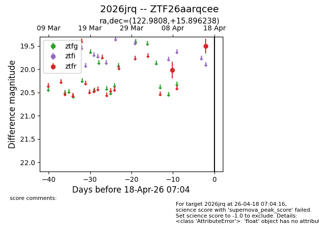
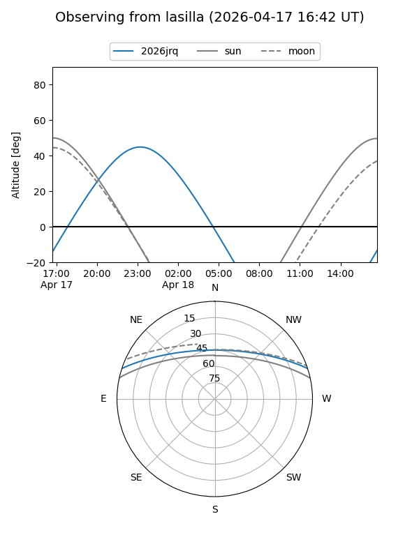
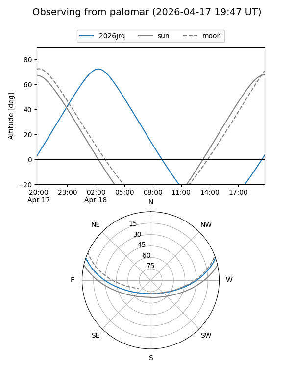

2026jrq
Target 2026jrq at 2026-04-18 07:09
Aliases and brokers:
FINK: link
Lasair: link
ALeRCE: link
TNS: link
YSE: link
alt names
ZTF26aarqcee (ztf,fink_ztf)
2026jrq (tns,yse)
Coordinates:
equatorial (ra, dec) = 122.9808,+15.89624
equatorial (HMS+DMS) = 08:11:55.40,+15:53:46.46
galactic (l, b) = (207.0584,+24.79349)
Flags:
Photometry:
last ztfr=19.50
2 ztfr detections
Lightcurve

Visibility


Additional plots